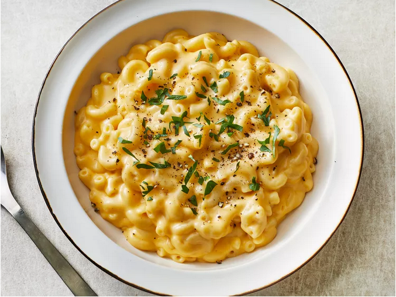

Mac & Cheese
Back to Home

Description
This 3-step mac and cheese is ready to serve in about 10 minutes, with minimal effort required. It's rich, hearty, flavorful, and there are tons of ways to jazz it up according to your personal preferences.
Ingredients
- 1 cup of dried pasta(Trader Joe's Organic Pasta Quintet)
- 3 tablespoons Trader Joes Unexpected Cheddar Cheese Spread (more if you want it extra cheesy and rich!)
Steps
- Boil pasta according to package directions. Reserve 1/2 cup of the cooking water, then drain and return the pasta to the pot.
- Stir in Unexpected Cheddar Cheese Spread, and 1-2 tablespoons of pasta water at a time until you reach your desired consistency.
original:2 ingredient Mac & Cheese by Christine Fiorentino
Back to Home
Back to Top